k-Day 057｜漢人的精神
起床時已經早上七點，睡墊呈現扁平狀。半夜起來充了兩次氣，看來是讓他退役的時候了。
觀察膝蓋的狀況，意外的停止抽蓄左膝也不再發熱，難道是大地冰敷法奏效？
拉開外帳拉鍊，隔壁的大哥大姐已經開車離去，沒能再次感謝他們，希望他們一生平安。
今日的住宿點是賽罕高畢休息站，不確定是否和昨晚一樣有小賣部，因此還是灌滿水上路。
看了風向，中午前吹的都是順風，早點出發也許可以趕在逆風發威前抵達。
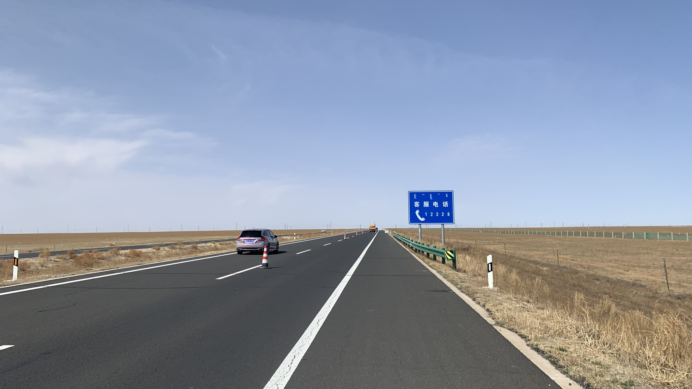
順風真是太爽了！騎了三個小時完全不覺得累。爬坡時的時速高達36km/h，前兩週連下坡都只能換小盤勉強踩到8km/h根本地獄啊。
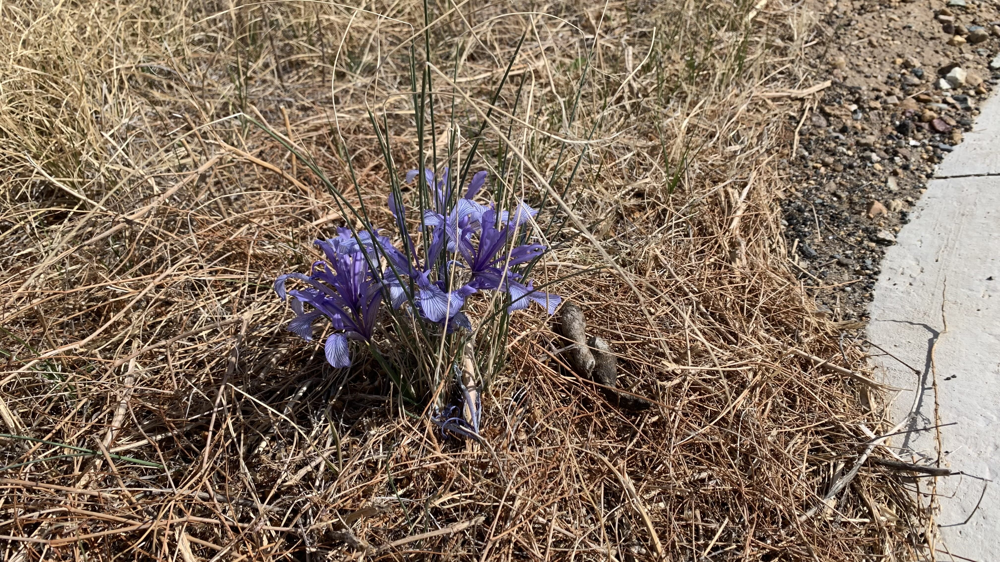
為了膝蓋著想，不敢停下腳步，直到看到路邊開了許多紫色小花才停下來喝口水拍張照片。
昨天在蘇旗遇到嘻哈青年時，我問他們這兩天是否草綠了一些，他們說草原是一天一個樣，確實這兩天冒芽了。在日本經過一個春天，在韓過又渡過一個春天，現在迎來蒙古的春天了。
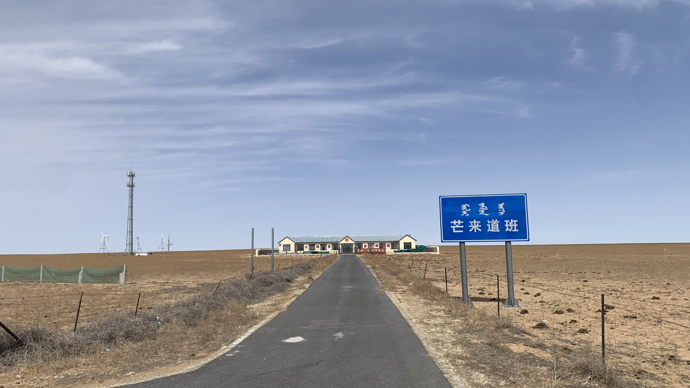
往蒙古前進的路上經過不少路邊的道班，如果真的遭遇什麼狀況，也許能和他們求救。雖然地圖上沒有標示出來，其實每隔五十公里左有都會有些矮小的人造建築，不至於太過荒涼。
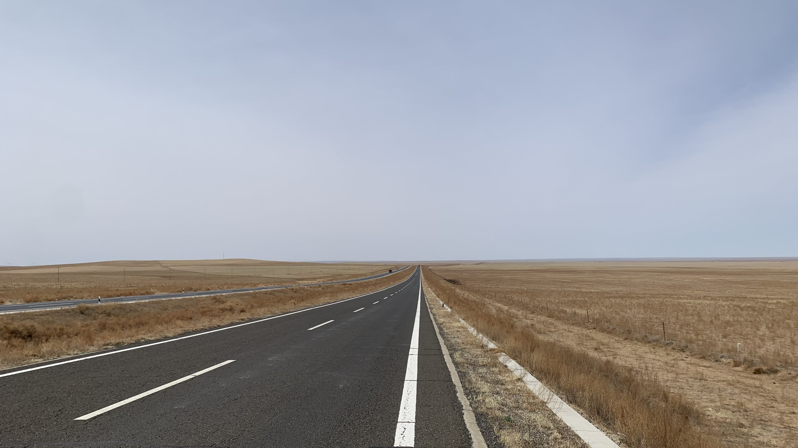
一望無際的草原，等到綠草長出來的時候會是什麼樣子呢。
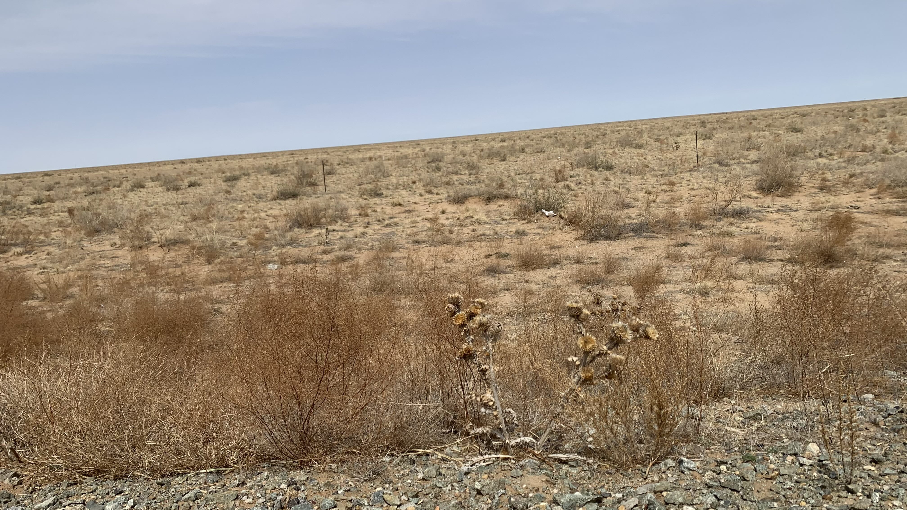
出現了類似乾燥地區會有的新植物，看起來是向日葵，但是周圍長滿了刺。
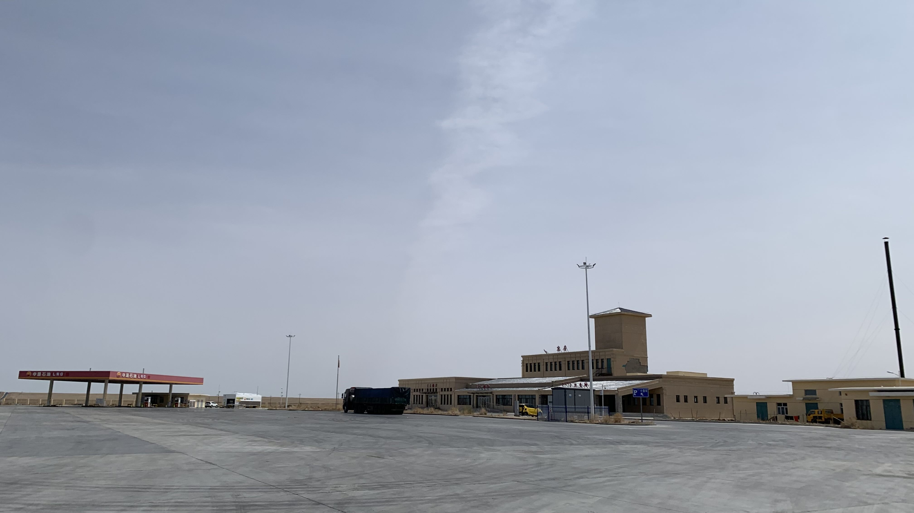
在逆風開始之際，順利滑入賽罕高畢休息站。看起來並沒有上面寫的餐廳和住宿服務，因此走到旁邊的加油站碰運氣。
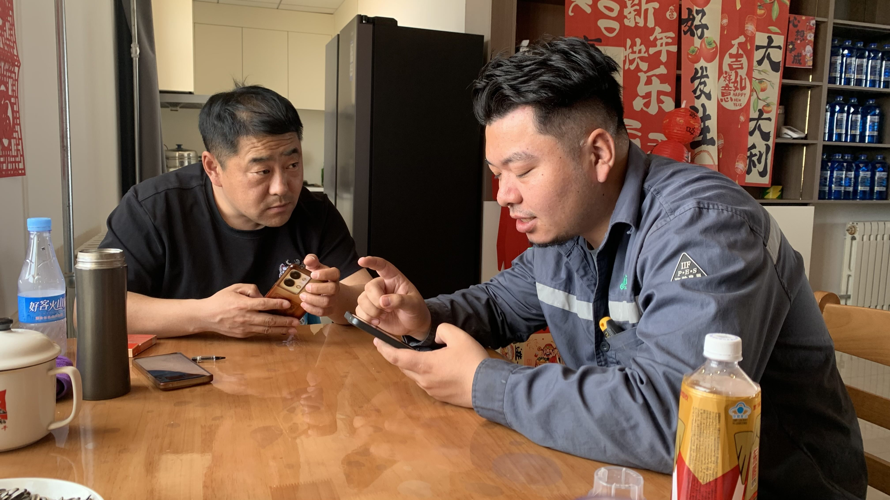
加油站也是新開的，還沒開始營業，但是來技術支援的年輕技師把自己帶來的麵包分給我，站長則拿了架上的水和東鵬特飲要我坐下休息。
問他們能否讓我在此過夜，站長說可以，這裡沒人管。實在不懂啊，為什麼在威海和大連得到的資訊會是搭了帳篷警察五分鐘內就會到呢？
休息一陣推著車往休息站廁所旁的空地移動，搭好帳篷坐在消氣的睡墊上看著遠處發呆，突然來了一位大叔，站在我正對面看著我。
大叔先用蒙語和我說了什麼，我用漢語回：「你好」
大叔轉換成漢語問我哪裡人？「我是台灣人」
「你住在這裡不用和公安報備嗎？」大叔問。
「不知道啊，沒有人和我說要報備，剛剛經過公安車，他們也沒問我。」
「那是因為他們以為你是本地人吧？」說完大叔走到旁邊的階梯上坐下，靜靜的觀察了一陣，才開口說「你晚上睡這不冷嗎？我晚上給你開裡面有地方睡。」說完大叔就離開了
太感謝了啊！！！心裡正為著破掉的睡墊發愁，竟然就獲得室內休息的福利了！
先在破掉的睡墊上躺著休息，五點拉開帳篷拉鍊，大叔就走來說：「一起吃飯吧。」
跟著大叔走進管理室，走到盡頭有個小房間，推開門時裡面有位貌似大叔老婆的女性不明所以地看著我，大叔和他說：「這是台灣來的，和我們一起吃飯」
她的反應讓我想起在日本被警察帶到車行時，老闆娘的表情。翻譯成文字大概是：「你不能先問我願不願意嗎？」
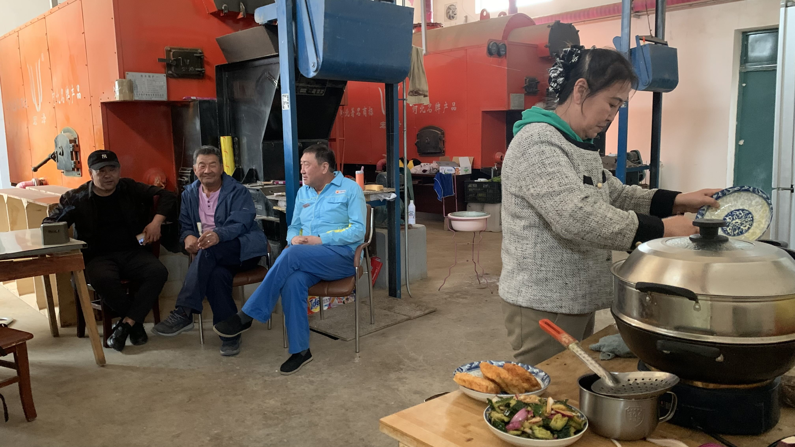
大叔的老婆在做飯時，我們聊起了騎車的目的。我說我想知道人類的精神是什麼，比如你覺得中國人和蒙古人的精神是什麼？我在中國問了好多人，沒人回答我。
大叔說：「中國人和台灣人一樣，都是沒有覺悟，吃飽了就開始想著掙錢，有了錢以後，他還想壓迫你。中國是共產，台灣是資本，本來制度是好的，但是人民沒有這個意識，沒有覺悟，所以只想著吃飽，吃飽後他就想要錢。所以習近平說不忘初心，但是人民沒有那個覺悟。」
「你們都是漢族，文化是一樣的，只是你們的書給你們不一樣的想法。」回想起一路上坑我的漢人，不得不承認大叔對漢人的了解相當透徹。
話到一半，早上的站長和另一位加油站員工也走進來，三個人大爺似的坐在椅子上抽煙。
跟幾位大哥說：「我幫你們照張相吧？」三個人馬上姿態都擺正了。拍完後後覺得不對啊，大叔你老婆還在煮飯呢，坐著聊得那麼開心是可以的嗎。於是退後幾步，讓大姐也入鏡。
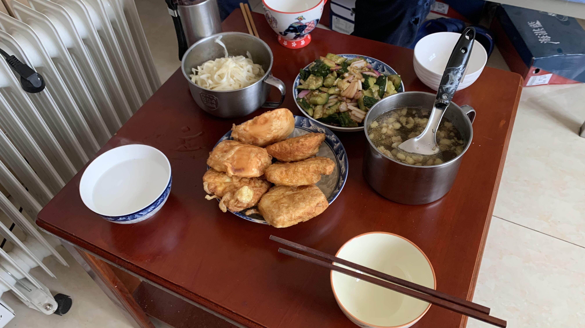
吃飯時繼續先前的話題，大叔和我說：「你要研究這個，你得和人說話。你今天自己在那裡，不和我說話，你要怎麼知道什麼精神？」
「有的呀，我和風說話，也和草原說話，他們可以和我說草原的精神。」大叔笑著說「風和你說了啥？草原和你說了啥？你去了日本覺得日本怎麼樣？」
「我在日本學到很多，這次旅行很多資訊也都是從日本人寫的研究看來的。」
「可是這裡很多人不喜歡日本呢。」大叔說。
「歷史上他們確實做了不好的事，不該被掩蓋。但是他們總會學習好的，契丹的多元文化和蒙古帝國的研究大多都是他們做的。既然有那麼好的文明精神，為什麼中國人自己不學習？」說著和大叔分享了一路上的觀察，以及對契丹與蒙古的空間和動態。
大叔聽到這裡，似乎覺得我不是來唬爛騙飯的旅人，從床邊起身拿出一本蒙文寫的成吉思汗和草原帝國，問我有沒有看過，並開始和我說蒙族的文化。
從昨天開始怎麼都遇到這種臥虎藏龍型的人呢，一邊在遙遠的邊疆當休息站管理員，一邊研讀書籍，這種人格也太帥氣了。
大姐聽到我的路線規劃則說他們是正藍旗的，大叔是因為工作所以來到這裡，平常都是一個人，最近加油站要開張，才來了站長和其他員工。今天剛好5/1放假，他才開了四百公里的車從正藍旗來陪他。
「正藍旗啊！那豈不是當時的首都！我本來也想往那裡走的！」沒想到這反應他倆聽了十分開心。大姐開始和我分享孫子從爬行到直立行走的影片，看家裡的裝潢和日常打扮，相當貴氣逼人，剛剛把煮飯的樣子拍下來看著他們想起昨晚請我吃飯的夫妻，內蒙人的大地移動實在浪漫瀟灑。
「你研究這個，要是回去以後沒有人承認怎麼辦？要是回去了原本做的工作都有其他人做了怎麼辦？」
「不需要被承認的，我只想寫給某個想看到這些東西的人。那個人不一定在中國或台灣，可能在其他國家，也可能不是現在，而是一百年後。但是我沒寫下來，那個人就看不到，就不知道也有人和他有一樣的疑問和回答。就像日本人種一棵松樹，自己也沒辦法看到他長大的樣子，可是他們會用好幾代人去保護那棵樹長大，讓幾百年後的人可以欣賞它。」
大叔斜躺在床上笑著沒說話，大姐則在旁邊點了點頭。
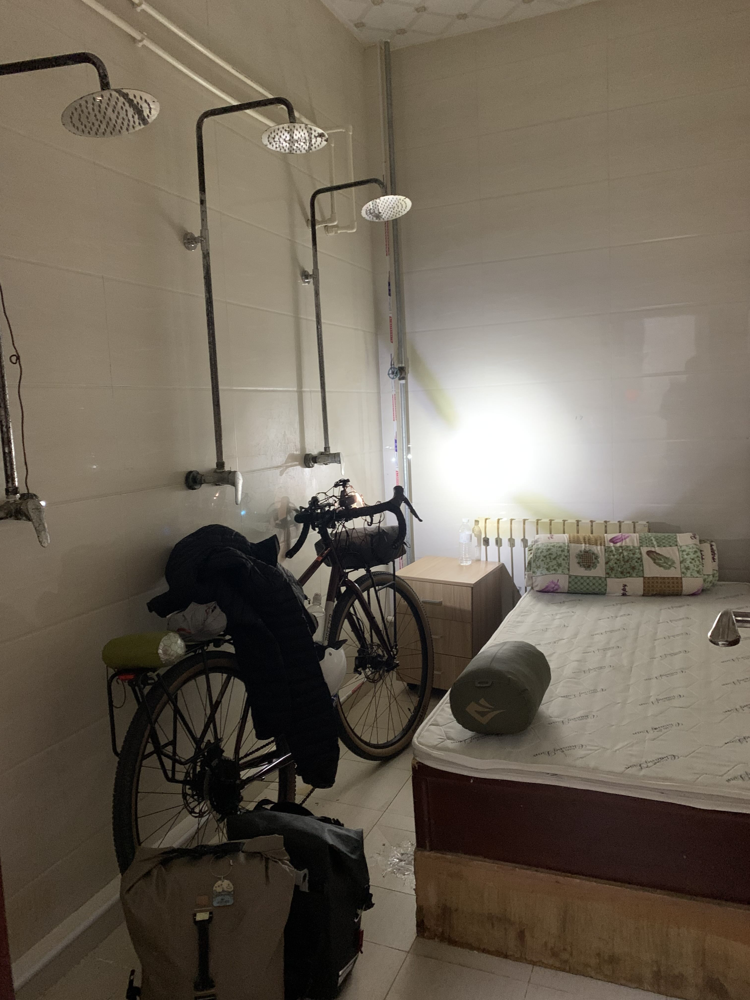
把食物掃光後，大叔帶我走回休息站。原以為他要開個門讓我睡在裡面的地上，沒想到他說的有地方睡，竟然真的有張床。他說這裡就是司機大哥休息用的，維持得相當乾淨整潔。
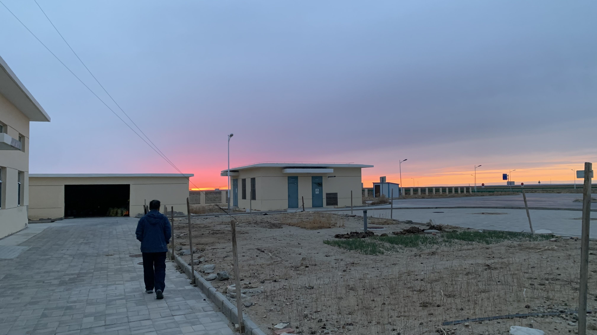
放了東西自己走回廣場上看著夕陽。從休息室走出來的大叔說：「很漂亮吧？」確實很美，在這裡看著如此景色的人一定擁有和別的地方不同的精神。
躺在床上想起大叔一邊噴煙一邊說：「以後你真的要寫出你的研究時，就說這是一個遇到的老人說的。這就是人類的精神。」
今日花費： 飲水+飲料 17元